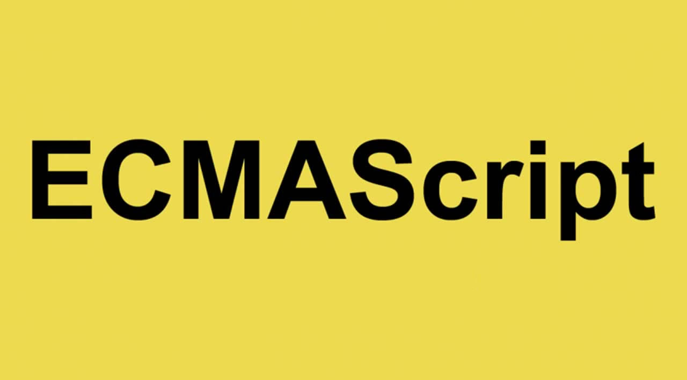

Введение
Если HTML определяет структуру и контент веб-страницы, а CSS задаёт формат и внешний вид, то JavaScript добавляет интерактивность и создаёт богатые веб-приложения.
Если HTML определяет структуру и контент веб-страницы, а CSS задаёт формат и внешний вид, то JavaScript добавляет интерактивность и создаёт богатые веб-приложения.
Базовый язык JavaScript стандартизирован комитетом ECMA TC-39 как язык программирования под названием ECMAScript
ECMAScript
Базовый язык также используется в не-браузерном окружении, например, в Node.js
Кроме прочего, ECMAScript определяет
parseInt, parseFloat, decodeURI, encodeURI...
Tекущие версии основы веб-браузеров включали ECMAScript 5.1 и ECMAScript 2015, но более старые версии (все ещё находящиеся в использовании) реализуют только ECMAScript 5.
Главное 6-ое издание ECMAscript было официально одобрено и опубликовано как стандарт 17 июня 2015 года на собрании ECMA General Assembly. С тех пор выпуски ECMAscript публикуются на ежегодной основе.
Спецификация WebIDL является связующим звеном между технологиями DOM и ECMAScript.
Объектно-ориентированная модель документа (DOM) это кросс-платформенное, языково-независимое соглашение по представлению объектов и взаимодействию с ними в документах HTML, XHTML и XML. Объект в DOM-дереве может быть адресован и обработан с помощью своих методов. Ядро Объектно-ориентированной модели документа стандартизируется W3C и определяет языково-независимые интерфейсы, абстрагирующие HTML и XML документы как объекты, и механизмы для управления этой абстракцией. Кроме прочих вещей, опряденных в DOM, можно также найти:
С точки зрения ECMAScript, объекты определённые в спецификации DOM называются объектами среды исполнения ("host objects").